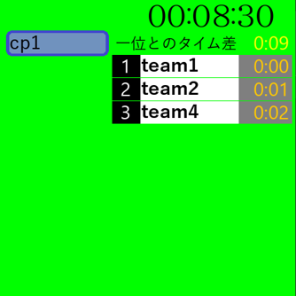

ABOUT
| Nickname | kunikyu |
|---|---|
| Affiliation | 大阪公立大学工業高等専門学校 知能情報コース4年 |
飽きっぽい性格の大阪の高専生です。
SKILL

HTML/CSS
このポートフォリオが作成できる程度

javascript
独学で簡単なゲームが作れる程度

Python
学校の授業で学習し、簡単なプログラムがかける程度

Arduino言語
授業で学習し、基本的な操作ができる程度

Scratch
簡単なゲームが作成できる程度
WORK

麻雀の待ち判定システム
2023/07 - 2023/08
麻雀の待ちを判定するシステムです。
学校の課題として作成したもので、Python, google colaboratoryで開発しました。
手牌を13枚入力するとその手牌の待ちを出力します。
正確でない場合があることを確認しています。

スイカDEゲーム
2023/10 - 2023/11
ヨッシーのたまご風のゲームです。
第59回大阪公立大学工業高等専門学校高専祭のクラス展示にて展示を行った作品です。
html/cssの一部とjavascriptを担当しました。
上から降ってくる果物を消してスコアを稼ぐゲームです。
条件を満たしていても果物が消えないバグを確認しています。

駅伝テロップ生成システム
2024/01
駅伝の中継のような順位とタイム差が表示されるシステムです。
駅伝の中継を見ていて似たようなのが作れそうだと思い、作ってみました。Pythonを使用して開発し、PySimpleGUI、Pygameを用いています。
チーム名、チェックポイント（定点観測地点）名の入力を行うと、それに合わせてUIが表示されます。画面左は操作画面です。右側に順位とタイム差が出力されます。
githubからアプリケーションのダウンロードが行えます。
mahjong-stats
2025/01 -開発途中
現在開発中のWebアプリです。
麻雀の成績を記録するアプリです。
Next.js, Reactを使用して開発しています。